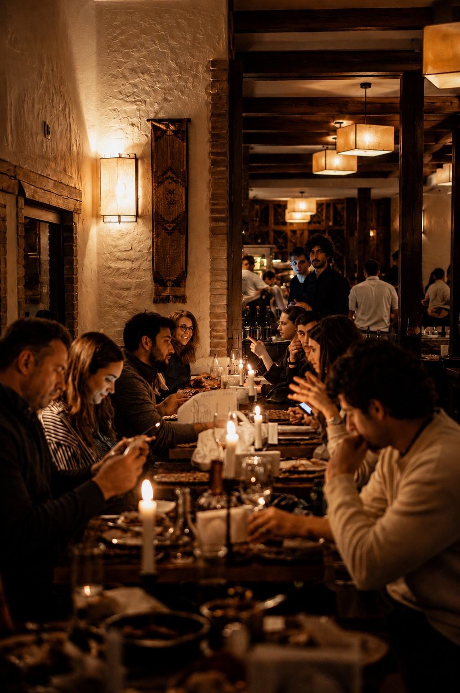
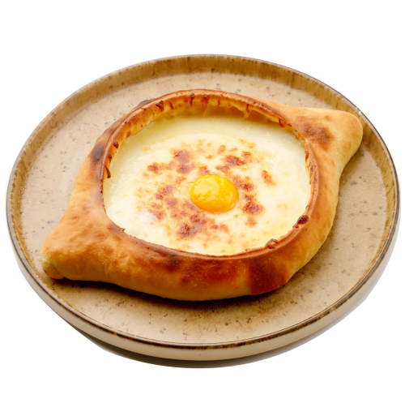
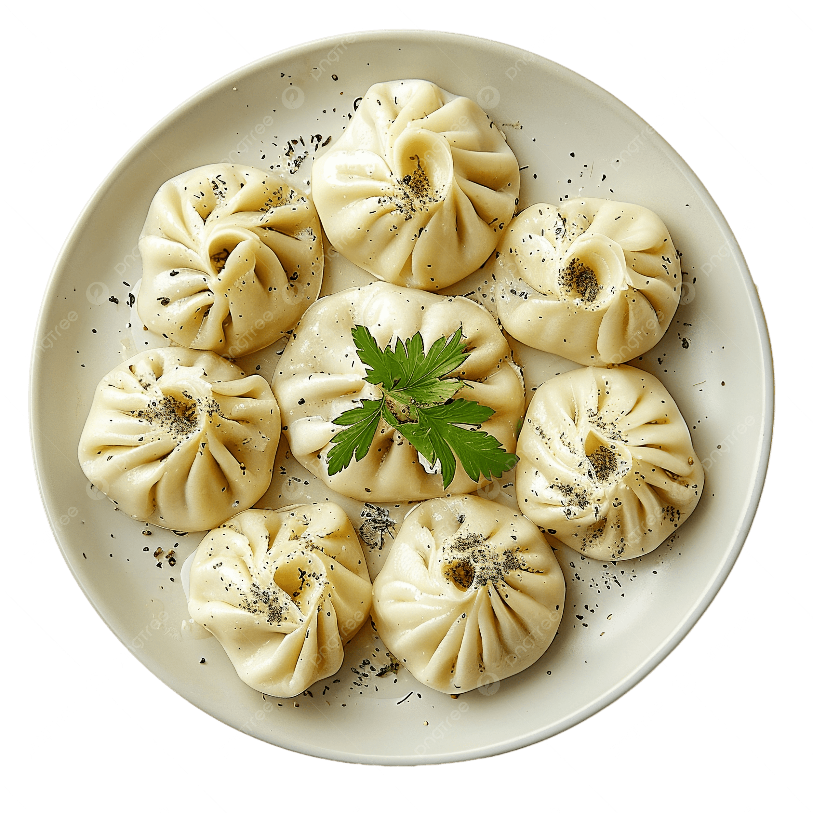
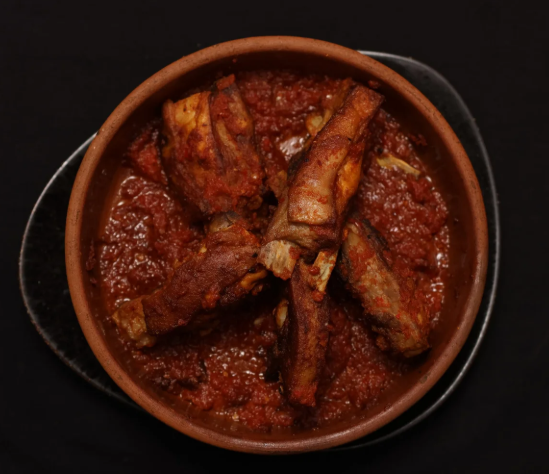
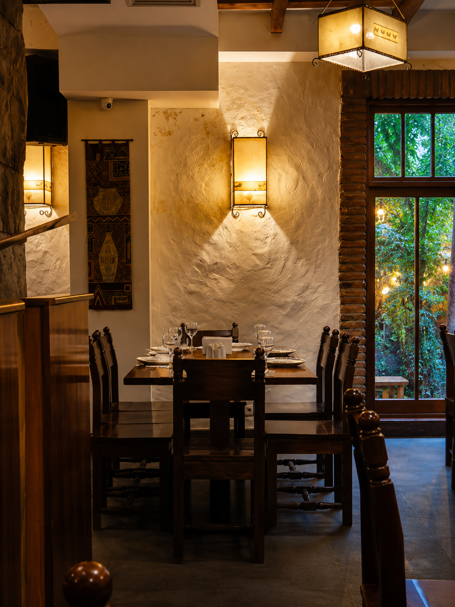
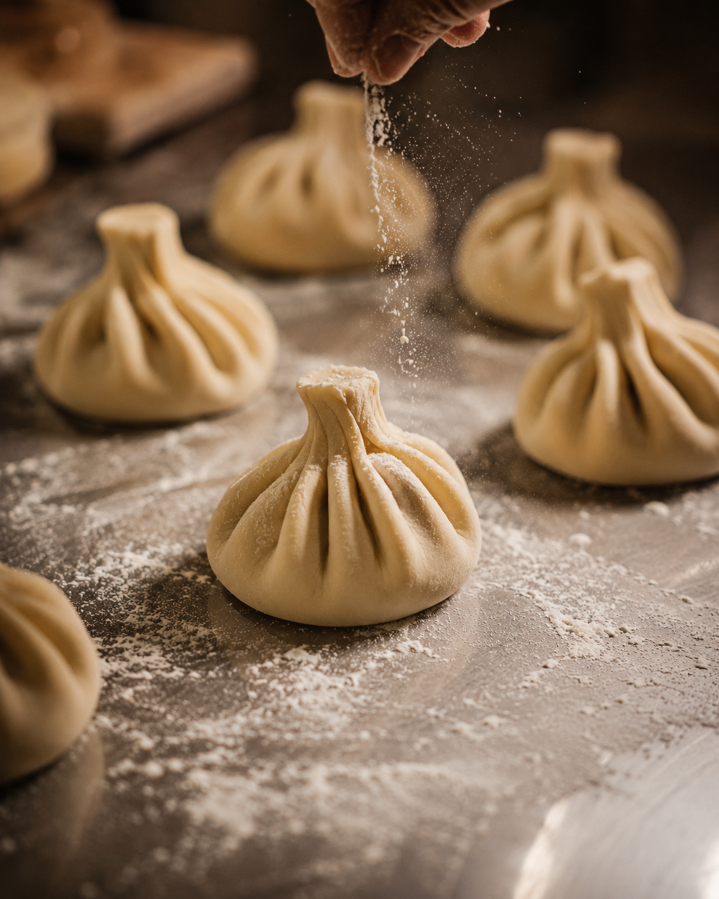
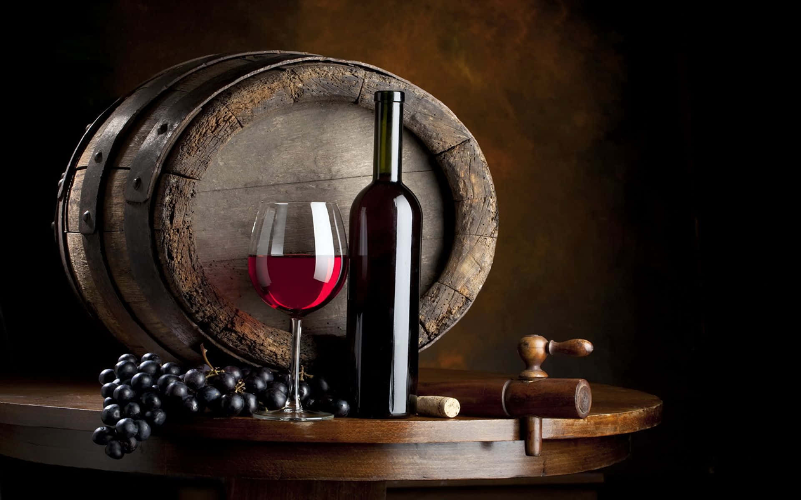
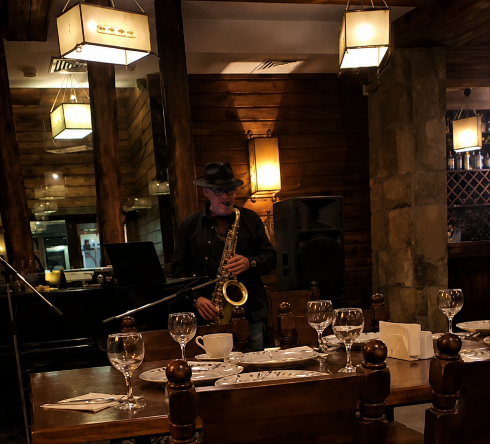

2009 წლიდან ჩვენი რესტორანი თბილისში ქართული სამზარეულოს აუთენტური გემოვნების წამყვანი დანიშნულებაა, სადაც ტრადიცია, გემო და თბილი ოჯახურობა ერთადაა. ვემსახურებით ახლად გამომცხვარ ხაჭაპურს, ხელით დაკეცილ ხინკალს და ოსტატურად შემწებულ ქართულ ბარბეკიუს.




ჩვენს შესახებ
თავლა (თავლა) არის ტრადიციული ქართული რესტორანი თბილისში, რომელიც გთავაზობთ აუთენტურ გემოებს, თბილ ოჯახურობასა და ნამდვილ ქართულ გამოცდილებას. ჩვენ ვართ წამყვანი დანიშნულება მათთვის, ვინც ეძებს აუთენტურ ქართულ სამზარეულოს: ხინკალს, ხაჭაპურსა და პრემიუმ ქართულ ღვინოს. თავლაში ყოველი კერძი ტრადიციითა და ხარისხით მზადდება, ქმნის დაუვიწყარ ქართულ გამოცდილებას თბილისის გულში.
თავლაში ჩვენი გამოცდილი ქართველი მზარეულები თაობების მიერ გადაცემულ ტრადიციულ რეცეპტებს იყენებენ, რათა შექმნან აუთენტური კერძები, რომლებიც ქართული სამზარეულოს ნამდვილ საფუძველს ასახავენ. ახლად გამომცხვარი ქართული პურიდან მდიდარ და გემრიელ ხაჭაპურამდე, ქართული ბარბეკიუდან, ახალ ბოსტნეულსა და მწვანილებამდე. ყოველი კერძი დაუვიწყარ ქართულ კვებას ქმნის.
გაიგეთ მეტიადგილი
ჩაეფლეთ საქართველოს გემოებში და განიცადეთ აუთენტური ქართული სამზარეულო თბილისში ახალი გზით. ხინკალიდან და ხაჭაპურიდან სულგუნამდე და ტრადიციულ სპეციალობებამდე. ყოველი კერძი ასახავს ქართული საკვების კულტურის სიღრმეს, თბილობასა და ხასიათს.
ქართული სპეციალობები

ქართული სპეციალობები
ვიყენებთ ყურადღებით შერჩეულ პრემიუმ ინგრედიენტებს, ხელით მომზადებასა და ძველქართულ სამზარეულო ტექნიკებს, რათა ყოველი კერძი ჩვენს უმაღლეს სტანდარტებს აკმაყოფილებდეს. საკუთარი ყველიდან და ახლად გამომცხვარ ქართულ პურამდე, ფრთნად დაკეცილ ხინკალამდე და სრულყოფილ ხაჭაპურამდე. ყოველი თეფში ზუსტობითა და ზრუნვით იქმნება.
ჩვენი გამოცდილი მზარეულები, თითოეული კულინარულ მემკვიდრეობაში ღრმად ფუძეული. ყურადღებით ამზადებენ ყოველ კერძს ბუნებრივი გემოების გამოსაკვეთად, აუთენტურობის შესანარჩუნებლად და ტრადიციული ქართული სამზარეულოს ნამდვილი გემოს მისაღწევად.
ჩვენი მენიუღვინის კოლექცია
საქართველო ერთ-ერთი უძველესი ღვინის წარმოების ქვეყანაა, 8000 წლიანი ტრადიციით. თავლაში ვაწარმოებთ ყურადღებით შერჩეულ აუთენტურ ქართულ ღვინოებს. ჩვენი ღვინის სია შექმნილია ქართული სამზარეულოს სრულყოფილად დასამატებლად და თბილისში ქართული გამოცდილების ასამაღლებლად.
გაეცანით ტრადიციულ ქართულ ქვივინოს კლასიკურ წითელ და თეთალ ღვინოებთან ერთად. ყველა ხელით არჩეულია ჩვენი მენიუსთან შესანიშნავი შეწყვილებისთვის.
ღვინოების ნახვა

ცოცხალი მუსიკა
გამოიცადეთ ცოცხალი ქართული მუსიკა თავლაში: ტრადიციული პოლიფონია, ფიდლინი და ქართული სასიამოვნო საღამოს ატმოსფერო. ჩვენი ღამოები აერთიანებს აუთენტურ გემოებს, თბილ ოჯახურობასა და ცოცხალ მუსიკას, რაც თბილისში უნიკალურ გამოცდილებას ქმნის. დაჯავშნეთ მაგიდა და ისიამოვნეთ საღამოს.
მაგიდის დაჯავშნასტუმართმოყვარეობა
დაჯავშნეთ მაგიდა
გეგმავთ ვიზიტს? მარტივად დაჯავშნეთ მაგიდა და ისიამოვნეთ აუთენტური ქართული გამოცდილებით თბილისში.
ჩვენი გუნდი მალე დაგიკავშირდებათ.
საჭიროების შემთხვევაში დაგვიკავშირდით: +995 579 61 11 10